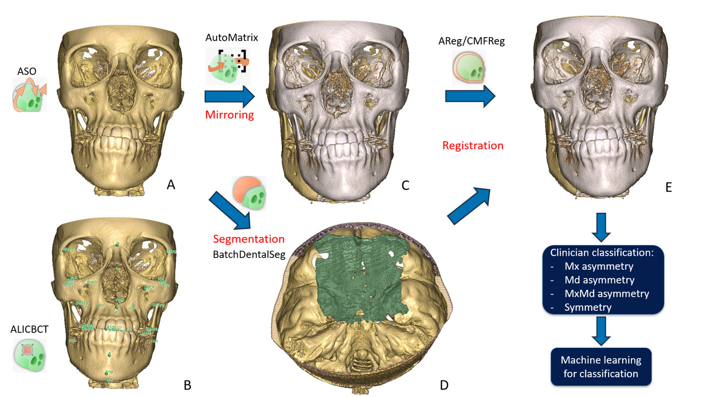

VFACE
Un orquestador que no aprende ni segmenta nada por sí mismo: encadena seis módulos para registrar un CBCT sobre su propia imagen especular, mide la diferencia y clasifica la asimetría facial esquelética con tres modelos LightGBM.


Clasificación automática de la asimetría facial esquelética en CBCT. VFACE no aprende nada ni segmenta nada por sí mismo: es un orquestador que encadena seis otros módulos del repositorio, extrae de ellos medidas lineales y angulares, y termina con tres clasificadores LightGBM. Es el módulo de más alto nivel de la cadena: el árbol de llamadas es aquí la información central.
El principio clínico cabe en una frase: T2 es la imagen especular del propio paciente. No hay un segundo escaneo. El escaneo se orienta, se refleja respecto al plano sagital medio, se registra sobre el original, y todo lo que se mide es una diferencia entre el paciente y su propio reflejo.
1. Dónde se sitúa en el pipeline
Nada en el repositorio llama a VFACE: CMakeLists.txt:54 lo añade como módulo terminal. En cambio, él llama a ocho procesos, siete de los cuales son otros módulos de la extensión. Todo se construye de una sola vez con CreateListProcess() (createlistprocess.py:120), que devuelve una lista de diccionarios {Process, Parameter, Module, Display, Review*}; el widget la desenrolla elemento por elemento.
| Llamado | Módulo de Slicer | Papel en VFACE |
|---|---|---|
| remuestreo de MRI2CBCT | mri2cbct_resample_cbct_mri | remuestreo isotrópico a 0,3 mm + recentrado |
| ASO PRE | pre_aso_cbct | centrado geométrico, escribe un .tfm |
| ALI-CBCT | ali_cbct | landmarks (orientación, luego medidas) |
| ASO SEMI | semi_aso_cbct | orientación sobre un gold standard |
| AMASSS | amasss_cli | máscaras óseas CB / MAND / MAX |
| AutoMatrix | automatrix_cli | aplica el espejo y las matrices de AREG |
| AREG-CBCT | areg_cbct | registro rígido de vóxeles con Elastix |
| VFACE_CLI | vface_cli | clasificación con LightGBM |
Tres pasos son funciones de Python ejecutadas en el hilo principal de Slicer, no CLI: run_aq3dc, run_bds (BatchDentalSegmentator / nnU-Net), batch_process (mapas de calor), además de derive_landmarks y postprocess. executeProcess() (VFACE.py:2454) distingue ambos tipos con una batería de nueve pruebas (test1..test9) sobre el tipo del objeto.
El árbol de llamadas, en modo «Full pipeline» + «Asymmetry Assessment» + «Quantitative + Visualization»
T1: un CBCT sin procesar, nada más
Preparación
- remuestreo isotrópico a 0,3 mm, centrado
T1 Resample/CBCT - PRE_ASO ×2, para el maxilar y la base del cráneo
Centered T1 Scans/{MAX,CB}+.tfm - ALI coloca 6 landmarks maxilares, luego SEMI_ASO orienta sobre el plano oclusal + sagital medio
Oriented T1 Scans/MAX - ALI coloca 7 landmarks de la base del cráneo, luego SEMI_ASO orienta sobre Frankfort + sagital medio
Oriented T1 Scans/CB - AMASSS segmenta
CBMASKyMANDMASKen el escaneo CB, yMAXMASKen el escaneo MAXT1 Masks
Reflexión
- AutoMatrix aplica
Matrix_mirror.tfma los escaneos orientados: de aquí sale el «T2»T2_Scan/{CB,MAX}
Registro
- AREG ×3, una vez por región: base del cráneo, maxilar, mandíbula
Registered Scan/<region>/<pat>_OutReg/
Medidas
- ALI coloca todos los landmarks de medida, en el escaneo CB
T1 Landmarks/CB derive_landmarkslos lleva de CB → MAX mediante un ajuste rígidoT1 Landmarks/MAX- AutoMatrix refleja los landmarks
Mirrored Landmarks/{CB,MAX} - AutoMatrix les aplica las tres matrices de AREG
Mirrored & Registered Landmarks/{CB,MAND,MAX} AQ3DC×3 mide distancias y ángulosMeasurements/Measurements_*.xlsx- el posprocesamiento ensambla la fila de características
Measurements/PostProcess_Measurements.xlsx VFACE_CLIejecuta los tres modelos LightGBMClassification/Classification.xlsx
Visualización
- BatchDentalSeg ×5 construye las superficies óseas
VTK Files/{T1 CB,T1 MAX,T2 CB,T2 MAND,T2 MAX} ModelToModel Distance×3 escribe los mapas de asimetríaHeatmaps/
Los nombres de las fases son los del propio módulo, tomados de VFACE_utils/review_steps.py; mirror_masks se omite porque solo existe en modo CMFReg.
El PDF Janson module.pdf es el diagrama de esta cadena (extraíble con pdftotext), útil para leer el código.
Las cuatro combinaciones que cambian el plan
| Combinación | Valores | Efecto sobre CreateListProcess |
|---|---|---|
comboBox3 «Where start?» | Full pipeline / File already Oriented / File already Registered | omite el bloque de remuestreo+ASO, o todo el bloque aguas arriba hasta el registro |
comboBox4 «Analysis Type» | Asymmetry Assesment / Longitudinal studies | espejo + clasificación, o un T2 real y ninguna clasificación |
comboBox2 «Mode» | Quantitative / Visualization / ambos | activa el bloque de medidas, el bloque de mapas de calor, o ambos |
comboBox «Registration Type» | AREG / CMFReg | único efecto real: CMFReg añade una reflexión de las máscaras en T2_Masks |
CMFReg es un callejón sin salida: la carpeta T2_Masks (createlistprocess.py:518) no la lee ningún paso posterior, y el registro pasa por areg_cbct en ambos casos. Elegir CMFReg solo cambia el tiempo de cálculo.
2. Archivos implicados
| Archivo | Líneas | Función |
|---|---|---|
VFACE/VFACE.py | 2977 | widget: interfaz, pausas de revisión, navegación por lotes, ejecución secuencial, limpieza |
createlistprocess.py | 2636 | el plan de la cadena, además de derive_landmarks, reorganizeStat, postprocess, mapas de calor |
functionaq3dc.py | 2484 | copia integrada (vendored) del módulo AQ3DC; solo se usa AQ3DCLogic |
segmentation_logic.py | 1051 | controla nnU-Net mediante SlicerNNUNetLib, exportaciones VTK |
Measure.py | 956 | las fórmulas: Distance, Angle, Diff2Measure |
review_steps.py | 249 | catálogo de pausas, y restrictStepToPatients |
_batch_worker.py | 235 | un subproceso por par de mallas para el mapa de calor |
VFACE_CLI/VFACE_CLI.py | 291 | carga con joblib + predict de LightGBM |
Dónde se ejecuta. Ningún entorno conda: todo está en el Python de Slicer. Las CLI pasan por slicer.cli.run; los pasos de Python se ejecutan en el hilo principal (la ventana se congela, de ahí el mensaje explícito publicado antes, VFACE.py:2945). CheckDependency() (VFACE.py:1027) solo instala dos dependencias: joblib y lightgbm. pytorch y nnU-Net provienen de SlicerNNUNetLib. CUDA: run_bds fija device="cuda" en el código (createlistprocess.py:1555), con una alternativa en CPU gestionada por Parameter.isSelectedDeviceAvailable().
3. Entradas y preprocesamiento
Entrada: una carpeta de CBCT T1, uno por paciente (.nii, .nii.gz, .nrrd, .nrrd.gz, .gipl, .gipl.gz). Ninguna segmentación, ningún landmark: VFACE parte del volumen sin procesar. checkInputFolder() (VFACE.py:1221) se niega a arrancar con una carpeta vacía.
Identidad del paciente: patientIdFromFileName (functionaq3dc.py:1370) corta el nombre en _Scan, _Or, _MAND, _MD, _MAX, _MX, _CB, _lm, _T2, _T1, _Cl, .. La misma cadena está duplicada tres veces en createlistprocess (marcada TIMEPOINT-SUFFIX): solo se reconocen _T1/_T2, un _T3 rompe el emparejamiento sin avisar.
Remuestreo: espaciado [0.3, 0.3, 0.3], resample_size = "None", center = "True", se conserva el tamaño propio del volumen y solo cambia el espaciado. Salida en <out>/T1 Resample/CBCT.
Centrado (pre_aso_cbct, model_folder=False): puramente geométrico, traslación del centro del volumen al origen, más un .tfm escrito al lado (PRE_ASO_CBCT.py:146). Aquí no interviene ninguna red.
Orientación: dos referenciales distintos, construidos sobre el mismo escaneo centrado.
| Referencial | Landmarks solicitados a ALI | Gold standard | Sufijo |
|---|---|---|---|
| MAX | ANS, IF, PNS, UL6O, UR1O, UR6O | Plano oclusal y plano sagital medio (Occlusal and Midsagittal Plane) | _MAX_Or |
| CB | Ba, LPo, N, RPo, S, LOr, ROr | Horizontal de Frankfurt y plano sagital medio (Frankfurt Horizontal and Midsagittal Plane) | _CB_Or |
semi_aso_cbct hace una inicialización con 3 landmarks y luego un vtkIterativeClosestPointTransform rígido (1000 iteraciones, StartByMatchingCentroidsOn) de los landmarks del paciente sobre los del gold (utils.py:623), y escribe <pat>_<suffix>_transform.tfm = la inversa de (ASO ∘ centrado). Después de esto, el plano sagital medio queda en x = 0, que es la condición para que el espejo sea válido.
El espejo. Matrix_mirror.tfm (incluido en la versión AutoMatrixMirror) es una AffineTransform con parámetros -1 0 0 0 1 0 0 0 1, traslación nula: una reflexión pura a lo largo del eje x en LPS, es decir, una simetría respecto al plano sagital medio. AutoMatrix la aplica a los volúmenes mediante sitk.ResampleImageFilter y a los archivos .mrk.json mediante transform.GetInverse().TransformPoint (Automatrix_CLI.py:171).
- 0.
t1_oriented_cb:semi_aso_cbctgira al paciente 2,67° hasta el plano x = 0 - 1.
t1_landmarks: los 26 puntos que ALI predijo aquí - 2.
t1_masks, AMASSS: las superficies óseas sobre las que se miden los mapas - 3.
mirror_scans:diag(-1, 1, 1), una reflexión respecto a x = 0 - 4.
registration_cb/_max/_mand: sobre una estructura, con los landmarks convergiendo - 5.
bone_surfaces: el propio mapaModelDistancede VFACE
ModelDistance. El espejo es Matrix_mirror.tfm = diag(-1, 1, 1), traslación nula: una reflexión pura respecto a x = 0, un plano del mundo. Nada en él sabe nada del paciente, y por eso existe la cadena aguas arriba: para llevar el plano sagital medio del paciente sobre ese plano. La reflexión se anima pasando por su estado degenerado, diag(0, 1, 1), porque una reflexión no puede interpolarse mediante rotaciones : el determinante tendría que pasar de −1 a +1 sin ser nunca cero. El plano se dibuja a mitad del giro. Y ahora lo importante. createlistprocess.py llama tres veces a ModelToModel Distance, una por registro, y los tres mapas no dicen lo mismo. Superpuesto sobre la base del cráneo, toda la cara aparece desplazada lateralmente: |d| mediana de 7,0 mm, 46% de los vértices por encima de 8 mm, rango de −25 a +32. Superpuesto sobre el maxilar, el cráneo superior coincide con su propio espejo a 1,0 mm. En la mandíbula, a 0,45 mm. Superponer sobre una estructura vuelve simétrica a esa estructura por construcción: eso no es un defecto de la medida, eso es la medida. La dirección de esas matrices se midió, no se supuso. elastix escribe la correspondencia fijo→móvil, de modo que es la inversa la que lleva el espejo sobre T1: la distancia media entre superficies baja de 2,88 mm a 1,73 mm con la inversa, y sube a 4,57 con la matriz tal como está escrita, peor que dejar el espejo sin tocar. El generador prueba ahora ambas direcciones contra T1 en cada ejecución, conserva la mejor, y se niega a escribir el archivo si ninguna supera a no hacer nada. Tres superficies distintas, tres escalas distintas. Estos son los archivos que escribe VFACE: el mapa de la base del cráneo abarca todo el cráneo, el del maxilar solo el cráneo superior, el de la mandíbula solo la mandíbula, así que cuando un mapa cubre una sola estructura el resto del cráneo queda en gris neutro detrás. Sus rangos medidos van de ±2,6 mm a ±32, por lo que cada mapa lleva su propia escala, indicada en la barra y fijada en su percentil 95 y no en su máximo: base del cráneo ±25 mm, maxilar ±5, mandíbula ±2,5, con saturación en menos del 3% de los vértices. Fijada en el máximo, la escala del mapa de la base del cráneo quedaba casi siempre en el centro pálido de la rampa; compárense por los números de la línea de estado, no por el tono. El azul es negativo, el rojo positivo, el gris pálido es cero: la distancia tiene signo, tal como la escribe VFACE. Lo que no se muestra, y por qué. Los dos pasos de orientación no animan ninguna rotación: este escaneo llega ya orientado, de modo que la pose de la que partió no existe en ninguna parte, y lo que se ve es la condición alcanzada y no un camino reconstruido. El referencial del mapa del maxilar se comprobó en lugar de suponerse: vive en el referencial orientado al maxilar, no en el de la base del cráneo, y de las cinco composiciones candidatas inv(CB)·MAX lo lleva sobre los otros a 0,23 mm frente a 3,38 con la identidad, así que adivinar lo habría dejado desviado uno o dos grados sin que nada pareciera roto. Las superficies se diezman a unos 40 000 triángulos para el navegador: la superficie fusionada propia de VFACE tiene 2,77 millones, de modo que lo que se ve es una muestra de un campo mucho más rico. Tres decisiones mantienen fiel esa muestra, cada una de ellas una corrección: la superficie se suaviza antes del diezmado y no después (diezmar primero y suavizar después desplazaba los vértices una mediana de 0,74 mm, hasta 3,03, respecto a la superficie sobre la que se midió la distancia); se eliminan sus 243 islas desconectadas; y cada vértice promedia la distancia sobre sus 12 vecinos más próximos de resolución completa en lugar de copiar uno (una sola muestra difería del promedio local hasta 23 mm en las discontinuidades, lo que moteaba el mapa). No se extrapola nada: cada vértice muestra una media de valores que VFACE midió realmente en su entorno inmediato. Dos correcciones que conviene registrar. Una versión anterior de esta figura registraba el espejo con un ICP escrito para la página, porque aún no se había encontrado esta salida. Ese ICP se deslizaba sobre el maxilar, 10,2° de rotación donde la matriz real de AREG gira 4,4°, y su distancia sin signo sobre una malla más gruesa daba una mediana de 1,36 mm, lo que hacía que este paciente pareciera casi simétrico. No lo es. La versión siguiente aplicaba las matrices de AREG en el sentido equivocado, de modo que el espejo giraba al revés en su camino hacia la pose registrada: un lector lo vio en la página antes que el generador, y por eso ahora la dirección se mide en cada compilación en lugar de descansar sobre una convención. El plano, y cómo se calcula: no se calcula. x = 0 es un plano del mundo, fijado por Matrix_mirror.tfm, que es diag(-1, 1, 1) con traslación nula y cero parámetros fijos. Nada ajusta un plano a este paciente. Lo que se calcula es la orientación que lleva al paciente sobre él: ALI coloca los landmarks, luego semi_aso_cbct hace una inicialización con 3 landmarks seguida de un ICP rígido sobre un gold standard, y aquí eso equivale a una rotación de 2,67°. El paso 0 la reproduce de verdad; una versión anterior de este pie de figura afirmaba que la pose previa a la orientación “no existe en ninguna parte”, lo cual era sencillamente falso: está en Centered T1 Scans, y la transformación que escribió VFACE hace la correspondencia entre ambos. Su dirección se midió, no se supuso. En el paso 4 los landmarks permanecen en pantalla para que se vea si el registro los junta realmente. Como el espejo intercambia izquierda y derecha, cada punto reflejado se empareja con su contraparte contralateral, RGo con LGo, lo que la sección de medidas ya explica; emparejar cada etiqueta consigo misma da 51 mm de sinsentido, y el emparejamiento contralateral da 4,70 mm antes del registro. Distancia mediana después: 1,57 mm en la base del cráneo, 2,16 en la mandíbula, y 12,84 en el maxilar, frente a 12,79 antes, ese no converge en absoluto, que es la misma debilidad que ya mostraba su ajuste de superficie laxo. Ambos extremos están medidos; solo el camino entre ellos está interpolado. Un defecto encontrado en la salida publicada. Estas posiciones registradas se recalculan aquí a partir de la matriz verificada y no se leen de Mirrored & Registered Landmarks, porque esa carpeta coincide con la matriz a 0,04 mm en el maxilar y a 0,13 en la mandíbula, pero difiere en 20,02 mm en la base del cráneo: sus puntos están desplazados como un bloque rígido unos 23 mm en x y se alejan del objetivo. La coincidencia en los otros dos es además la prueba más sólida de que la inversa es la dirección correcta.
Sistema de coordenadas: todo está en LPS. ALI escribe "coordinateSystem": "LPS" (io.py:39), igual que derive_landmarks, y createDictPatient lee el campo position en bruto sin conversión. Los signos de los componentes de las medidas se derivan directamente de esto (§5.1). Las únicas inversiones RAS↔LPS del módulo están en saveAdjustedRegistration() (revisión manual) y en las exportaciones VTK de segmentation_logic (Scale(-1,-1,1) antes de escribir).
4. Los modelos llamados
VFACE solo contiene un modelo propio, los LightGBM. Los demás pertenecen a los módulos aguas arriba, descargados por DownloadAllFiles() (VFACE.py:950).
| Modelo | Origen | Naturaleza |
|---|---|---|
| ALI-CBCT | versión v0.1-v2.0_models (7 zip: Cranial Base, Lower Bones 1/2, Upper Bones v2, dientes) | agentes de RL, DNet = monai DenseNet (brain.py:39) |
| AMASSS | AMASSS_CBCT/AMASSS_Models.zip | 3D UNet, salida de mapa de etiquetas |
| DentalSegmentator | Dataset111_453CT_v100.zip (SlicerDentalSegmentator v1.0.0-alpha) | nnU-Net 3d_fullres, fold 0 |
sym_asymm.txt, mand_asym.txt, max_asym.txt | versión VFACE/V_FACE_Models.zip | LightGBM, pickles de joblib |
4.1 ALI-CBCT
red agentes de aprendizaje por refuerzo, monai DenseNet.
Agentes de aprendizaje por refuerzo: un agente por landmark, que se mueve dentro de una vecindad de agent_FOV = [64,64,64], dos escalas spacing = [1, 0.3] mm, speed_per_scale = [1,1], spawn_radius = 10. Seis movimientos posibles (MOVEMENT_MATRIX_6, constants.py:29). Salida: un .mrk.json por grupo anatómico (CB, U, L, CI), llamado <scan>_lm_Pred_<group>.mrk.json.
Los landmarks solicitados para las medidas son la unión sin duplicados de las columnas Point 1 / Point 2 / Line de las listas MAND y CB (createlistprocess.py:144): dict.fromkeys evita que un landmark compartido por ambas dispare dos agentes.
4.2 AMASSS: las máscaras
red 3D UNet.
Dos llamadas: CBMASK,MANDMASK sobre el escaneo orientado CB, MAXMASK sobre el escaneo orientado MAX, merge="SEPARATE", genVtk=False, prediction_ID="seg". Nombres producidos: <base>_seg_<STRUCT>MASK.nii.gz (AMASSS_CLI.py:601). Estas máscaras solo sirven para enmascarar la imagen fija del registro, no para medir nada.
4.3 BDS / DentalSegmentator: las superficies
red nnU-Net 3d_fullres.
run_bds llama a run_dental_segmentation(model="DentalSegmentator", device="cuda", export_formats = VTK | VTK_MERGED). nnU-Net produce un mapa de etiquetas de 5 clases (Upper Skull, Mandible, Upper Teeth, Lower Teeth, Mandibular canal, segmentation_logic.py:600), convertido en superficies:
_exportMergedVTK:vtkDiscreteMarchingCubes(un contorno por valor de etiqueta presente, indexado por posición y no por valor; el comentario del propio código explica el error corregido),vtkWindowedSincPolyDataFilter60 iteraciones, banda de paso 0,05, normales por celda,vtkQuadricDecimation0,4 por etiqueta, y después IJK→RAS→LPS antes de escribir;_exportVTKPerLabel: la misma cadena sobre la representación «Closed surface» de cada segmento, un archivo por estructura.
Los pesos no están en el repositorio: solo dataset.json y plans.json están versionados, y PythonDependencyChecker comprueba la presencia de Dataset111_453CT/nnUNetTrainer__nnUNetPlans__3d_fullres/fold_0/checkpoint_final.pth antes de descargar la URL de download_info.json (~220 MB). Los otros tres modelos ofrecidos (PediatricDentalsegmentator, NasoMaxillaDentSeg, UniversalLabDentalsegmentator) tienen su código de descarga pero VFACE nunca los selecciona: aquí son código muerto, y sus rutas Path(__file__).parent/"Resources" están, por lo demás, desfasadas un nivel (VFACE_utils/Resources/...), a diferencia de la ruta corregida del modelo por defecto (segmentation_logic.py:469).
4.4 El registro: AREG-CBCT
calculado Elastix, sin aprendizaje.
VoxelBasedRegistration enmascara T1 con la máscara AMASSS correspondiente y luego lanza Elastix rígido (make_rigid_param_map_deterministic, utils.py:530): 3 resoluciones, pirámide 8,8 4,4 2,2, AdvancedMattesMutualInformation 64 bins, ConjugateGradient 1500 iteraciones, ImageSampler = Grid, NumberOfThreads = 1 (determinismo). Sin aprendizaje.
Salidas: Registered Scan/<Cranial Base|Maxilla|Mandible>/<pat>_OutReg/ que contiene <pat>_<CB|MAX|MAND>Scan_Reg.nii.gz y <pat>_<CB|MAX|MAND>_Reg_matrix.tfm.
Detalle frágil: la máscara se elige por palabra clave en el nombre del archivo (CB→["cb"], MAND→["mand","md"], MAX→["max","mx"]) y gana la primera que se encuentra (utils.py:42). Pero <pat>_CB_Or_seg_MANDMASK.nii.gz también contiene «cb». Solo el orden alfabético (CBMASK < MANDMASK) evita que el registro de la base del cráneo quede enmascarado por la mandíbula. Cualquier cambio de nombre rompe esto.
5. El núcleo algorítmico: las medidas
5.1 Los ocho tipos de medida
Todos instanciados por AQ3DCLogic.createMeasurement (functionaq3dc.py:1995), a partir de la columna Type of measurement del xlsx: emparejados por igualdad exacta de cadena. Las posiciones están en LPS (x = izquierda, y = posterior, z = superior).
| Tipo (cadena exacta) | Entradas | Fórmula (Measure.py) |
|---|---|---|
Distance between 2 points T1 / T2 | P1, P2 en el mismo momento temporal | d = p2 − p1; (lr, ap, si) = (−dx, −dy, dz); 3D = ‖d‖; redondeado a 3 decimales |
Distance between 2 points T1 T2 | P1 @T1, P2 @T2 | idéntico, pero cruzado entre los dos conjuntos de puntos: esta es la medida de asimetría |
Distance point line T1 / T2 | P, línea (L1, L2) | d = reject(P − L2, L1 − L2) = la componente ortogonal a la línea; si L1 ≈ L2 (atol=1e-5), d = P − L1 |
Distance point line T1 T2 | dos medidas | Diff2Measure: lr/ap/si de T2 menos los de T1; 3D recalculado como ‖(lr,ap,si)‖ |
Angle between 2 lines T1 / T2 | 2 líneas, mismo momento temporal | véase abajo |
Angle between 2 lines T1 T2 | 2 líneas T1, 2 líneas T2 | Diff2Measure componente a componente |
Angle line T1 and line T2 | línea @T1, línea @T2 | el mismo cálculo de ángulo, con líneas procedentes de momentos temporales distintos |
Fórmula del ángulo (Angle.__computeAngles, Measure.py:664). u = p2 − p1, v = p4 − p3. Para cada eje a de [2, 0, 1], respectivamente yaw (plano axial), pitch (plano sagital), roll (plano coronal):
- se descarta la componente
a(proyección 2D), se normaliza; θ = degrees(arctan2(‖u × v‖, u · v));- si
p2 == p3(las dos líneas comparten vértice):θ ← 180 − θ, esto es lo que convierteRCo-RGo / RGo-Meen un ángulo gonial anatómico; - signo:
z = u_x·v_y − u_y·v_x; para el eje yaw el signo sigue az, para pitch y roll está invertido.
El bloque complement_checkbox (complemento a 180°) está comentado: Measure.py:679.
Significado de las componentes. manageMeaningComponent() rellena las etiquetas (R/L, A/P, S/I para las medidas esqueléticas; M/D, B/L, E/I para los dientes; ClockWise/CounterC para los ángulos T1↔T2). Los valores *_Component devueltos son valores absolutos; es reorganizeStat (createlistprocess.py:1599) quien les devuelve un signo a partir de la etiqueta.
Aquí coexisten dos convenciones opuestas: para una línea esquelética, Vertical = −|si| cuando la dirección es S (superior), mientras que para una línea dental Vertical = −|si| cuando la dirección es I. Conviene comprobarlo antes de reutilizar estas columnas. Un ángulo Angle between 2 lines T1 no cae en ninguna rama de manageMeaningComponent (ni dental, ni T1↔T2): sus etiquetas quedan vacías y su valor queda sin signo.
5.2 La lista por defecto (DefaultList.zip)
Fuera del repositorio, descargada por el botón Default en <Documents>/SlicerDownloads/V_FACE/DefaultList. El nombre del archivo decide su papel (SplitMeasurements, createlistprocess.py:1831): CB/CRANIAL, MAND/MANDIBLE, MAX/MAXILLA, FEAT/FEATURE.
| Archivo | Contenido |
|---|---|
CB_measurement.xlsx | 26 distancias + 4 ángulos |
MAND_measurement.xlsx | 15 distancias (subconjunto de CB) |
MAX_measurement.xlsx | 7 distancias (subconjunto de CB) |
features.xlsx | el encabezado: ID + 14 características + Asymmetry, Mand, Max |
Las 16 distancias T1↔T2 de CB (= asimetría directa): RFZyg/LFZyg, ROr/LOr, A/A, ANS/ANS, IF/IF, RInfOr/LInfOr, RMZyg/LMZyg, RPF/LPF, UR6MB/UL6MB, B/B, Pog/Pog, Me/Me, RGo/LGo, RCo/LCo, RAF/LAF, LR6MB/LL6MB. Obsérvese el patrón: un punto de la línea media se compara consigo mismo en el espejo (A/A, B/B, Me/Me), un punto lateral se compara con su contraparte contralateral (RGo/LGo) puesto que el espejo ha intercambiado los lados.
Las 10 distancias solo de T1 son longitudes anatómicas clásicas: RCo-Pog, LCo-Pog, RGo-Pog, LGo-Pog, RCo-RGo, LCo-LGo, RAF-RCo, LAF-LCo, UR6MB-LR6MB, UL6MB-LL6MB.
Los 4 ángulos: RCo-RGo / RGo-Me y LCo-LGo / LGo-Me (ángulos goniales, solo T1, vértice compartido y por tanto complementados a 180°); LAF-RAF / RAF-LAF y LPF-RPF / RPF-LPF como Angle line T1 and line T2. Invertir el orden de los puntos en la línea T2 es deliberado: como el espejo ha intercambiado izquierda y derecha, escribir RAF-LAF del lado T2 devuelve los dos vectores a ser casi colineales, de modo que el ángulo medido tiende a 0 en un paciente simétrico.
create_list_landmark (createlistprocess.py:2056) ejecuta pd.read_excel(path) sin sheet_name=None: solo se lee la primera hoja. Un landmark que aparezca únicamente en la hoja Angle between 2 lines nunca se solicitaría a ALI. No se nota con la lista por defecto porque sus 9 landmarks de ángulo aparecen todos también en la hoja de distancias.
5.3 derive_landmarks: landmarks MAX sin una segunda pasada de ALI
createlistprocess.py:1428. ALI solo se ejecuta una vez, en el referencial CB. Los landmarks en el referencial MAX se obtienen mediante composición rígida:
to_centred = sitk.ReadTransform(<pat>_CB_Or_transform.tfm)
from_centred = sitk.ReadTransform(<pat>_MAX_Or_transform.tfm).GetInverse()
moved = from_centred.TransformPoint(to_centred.TransformPoint(p))Los dos archivos de ASO en formato .tfm comparten el mismo escaneo centrado como referencia, de modo que el centrado se cancela y la composición es exacta. Ganancia: unos minutos por paciente, y un único punto de edición manual, corregir un landmark en la pausa t1_landmarks se propaga automáticamente al referencial MAX. La agrupación en archivos de salida reutiliza los GROUP_LABELS de ALI, leídos mediante ast.parse sobre constants.py para evitar importar torch (createlistprocess.py:1373).
5.4 reorganizeStat y luego postprocess: de la medida a la característica
run_aq3dc produce una fila por (paciente × medida) con 16 columnas (R-L Component/Meaning, A-P, S-I, 3D Distance, Yaw, Pitch, Roll). reorganizeStat las aplana en columnas con signo Transverse, AP, Vertical, 3D, Yaw, Pitch, Roll, más BL, MD, Rotation, Arch, Segment para las líneas dentales. Las columnas enteramente "x" se descartan, así que Measurements_MAND.xlsx y Measurements_MAX.xlsx no tienen columnas angulares.
postprocess (createlistprocess.py:2546) hace el camino inverso: decodifica cada nombre de columna de features.xlsx para averiguar qué fila de qué xlsx debe leer.
CB_LPF_RPF/RPF_LPF_Roll
└┬┘ └──────┬────────┘└┬─┘
│ │ └ component ("RL"->Transverse, "IS"->Vertical, "AP", Pitch, Yaw, Roll)
│ └ landmarks ("/" -> angle label "LPF-RPF / RPF-LPF")
└ source file (CB, MAND, MAX)
Cuando el resto contiene más de 2 segmentos, la característica es un promedio: CB_RAF_RCo_LAF_LCo_AP = el promedio de las componentes AP de RAF - RCo y LAF - LCo. Salida: Measurements/PostProcess_Measurements.xlsx, una fila por paciente, columnas Asymmetry/Mand/Max vacías.
6. El clasificador
VFACE_CLI carga tres pickles de joblib (VFACE_CLI.py:96). Son modelos lightgbm.sklearn.LGBMClassifier, no una red, no un árbol de reglas escrito a mano.
Los hiperparámetros y el número de árboles conservados que figuran a continuación se confirmaron deserializando los tres archivos .txt.
| Modelo | Hiperparámetros | Características | Árboles conservados |
|---|---|---|---|
sym_asymm.txt | gbdt, objective=binary, num_leaves=31, learning_rate=0.03, n_estimators=5000, class_weight=balanced, random_state=42, sin regularización | 14 | 459 |
mand_asym.txt | igual | 7 | 3 |
max_asym.txt | igual | 7 | 11 |
Los 5000 estimadores anunciados nunca se alcanzan (parada temprana durante el entrenamiento). Los submodelos son por tanto minúsculos: 3 y 11 árboles de 5 a 7 hojas.
Las 14 características y la importancia por ganancia del modelo principal:
| Característica | Ganancia |
|---|---|
CB_Me_Me_RL | 3640 |
MAND_RCo_RGo_LCo_LGo_IS | 1378 |
CB_Pog_Pog_RL | 348 |
CB_B_B_RL | 72 |
CB_LAF_RAF/RAF_LAF_Yaw | 58 |
MAX_RPF_LPF_AP | 15 |
CB_LPF_RPF/RPF_LPF_Yaw | 10 |
CB_LPF_RPF/RPF_LPF_Roll | 8 |
MAX_RPF_LPF_IS | 8 |
MAX_RPF_LPF_RL | 6 |
CB_RPF_LPF_IS | 6 |
MAND_Me_Me_RL | 4 |
MAX_ANS_ANS_RL | 2 |
CB_RAF_RCo_LAF_LCo_AP | 2 |
El modelo descansa por tanto, en un ~90%, en dos medidas: la desviación transversal del mentón (Me frente a su espejo) y la diferencia vertical entre las dos ramas de la rama mandibular.
Encadenamiento de los tres modelos (classify_symmetry, VFACE_CLI.py:136):
- las columnas que contienen
/se renombran conclean_name(/→_), lo que hace queCB_LAF_RAF/RAF_LAF_Yawcoincida con elfeature_name_almacenado en el modelo,CB_LAF_RAF_RAF_LAF_Yaw; model_sym_asym.predict(df[feature_name_])→Asymmetry∈ {"Asymmetric"(clase 0),"Symmetric"(clase 1)};MandyMaxse inicializan a"False", y solo los casos asimétricos pasan pormand_asym(7 características, 5 de ellas del bloque CB) ymax_asym(7 características), cada uno devolviendo"True"/"False";- los dos submodelos son independientes: ambos pueden ser
"True"(asimetría mandibular y maxilar), ninguno es excluyente.
Salida: Classification/Classification.xlsx = la tabla de características aumentada con las tres columnas. Este es el entregable final.
7. Revisión manual y navegación por lotes
7.1 Las pausas
Añadidas por el commit 2609bc4. Un paso del plan puede llevar claves Review*; el widget se detiene al final del paso, carga los resultados en la escena y espera. El catálogo vive en review_steps.py, separado de la cadena para que el panel pueda enumerar las pausas antes de que CreateListProcess haya creado una sola carpeta.
| Id | Etiqueta | Naturaleza | Disponible si |
|---|---|---|---|
t1_landmarks_orientation_max | landmarks de orientación maxilar | editable | Full pipeline |
t1_oriented_max | orientación maxilar | solo visualización | Full pipeline |
t1_landmarks_orientation_cb | landmarks de orientación de la base del cráneo | editable | Full pipeline |
t1_oriented_cb | orientación de la base del cráneo | solo visualización | Full pipeline |
t1_masks | máscaras óseas | solo visualización | salvo «already Registered» |
mirror_masks | máscaras reflejadas | solo visualización | asimetría + CMFReg |
mirror_scans | escaneos reflejados | solo visualización | asimetría |
registration_cb / _max / _mand | registros | ajustable | salvo «already Registered» |
t1_landmarks | todos los landmarks de medida | editable | cuantificación |
bone_surfaces | superficies BDS (solo _merged) | solo visualización | visualización |
Tres naturalezas, tres comportamientos:
VIEW: se carga y se muestra, no se reescribe nada.LANDMARKS:loadEditableMarkupsfuerzaSetLocked(False)sobre el nodo y sobre cada punto, y hace visible la visualización, pues ALI escribe sus puntos bloqueados y ocultos. Se registran las posiciones iniciales; al pulsarContinue,savePauseEditssolo reescribe los archivos en los que al menos un punto se ha movido (VFACE.py:2095).REGISTRATION:setUpAdjustmentsuperpone el escaneo registrado a media opacidad sobre T1, y lo asocia a unvtkMRMLLinearTransformNodecon manejadores de interacción. Al pulsarContinue,saveAdjustedRegistration(VFACE.py:2207) convierte el desplazamiento RAS a LPS (flip = diag(-1,-1,1),lps = flip @ ras @ flip) y lo compone en el propio.tfmde AREG:sitk.CompositeTransform([areg, nudge.GetInverse()]), porque AutoMatrix, aguas abajo, solo puede aplicar una única matriz. El volumen corregido se consolida entonces y se reescribe.
Dos restricciones de orden importantes en el plan: el bloque de cuantificación se coloca antes del bloque de visualización, para que la única pausa editable útil (t1_landmarks) no llegue después de cinco segmentaciones con nnU-Net; y enterPauseForReview no carga nada directamente, arma un QTimer.singleShot(0, self.beginReview), porque esto ocurre dentro de una función de retorno de un observador VTK, donde el bucle de eventos de Qt no se está ejecutando y donde cargar un volumen llenaría la tubería de stdout de Slicer sin lector (la misma familia de error que _briefCliOutput y outputToFile).
buildPauseQueue (VFACE.py:1813) filtra los archivos encontrados por identidad del paciente, nunca por fecha: una carpeta de salida reutilizada contiene a los pacientes de ejecuciones anteriores. belongsToRun acepta un id que extiende un id esperado en un límite _ (los mapas de calor salen como C_0001_Mandible_ModelDistance). Si el filtro vacía por completo la revisión habiendo existido archivos, esta se desarma en lugar de omitir una pausa solicitada.
7.2 Navegación por lotes: lo que existe
Contrariamente a lo que indica una nota de proyecto más antigua, el port desde AREG está hecho (2609bc4, rama vface-review-rebuild).
Previous patient/Next patient(VFACE.py:2324), que guardan la edición actual antes de cambiar de paciente;- el nombre del paciente y su posición
i / nenreviewPatientLabel; - marcado:
onReviewToggleFlagmarca al paciente actual enself.review_flagged; - retroceso selectivo:
onReviewGoBack(VFACE.py:2351) retrocede hasta el paso corregible más cercano (previousCorrectableStep, que solo se detiene enLANDMARKSoREGISTRATION), reinyecta los pasos intermedios al principio delist_process, y los restringe a los pacientes marcados medianterestrictStepToPatients, una carpeta temporal de enlaces simbólicos (shutil.copycomo alternativa), con la estructura de árbol preservada; review_flagged_carrypasa la lista de pacientes repetidos a la siguiente construcción de la cola de revisión, de modo que los demás conservan sus resultados aceptados;clearReviewTempFolderslimpia las carpetas de enlaces al final de la ejecución.
El botón Continue se llama Next step: moverse entre pacientes y avanzar en la ejecución son dos acciones distintas.
7.3 Navegación por lotes: lo que falta de verdad
La carencia está en INPUT_KEYS (review_steps.py:168):
INPUT_KEYS = ("input", "input_patient", "input_matrix")Solo ALI, PRE_ASO, SEMI_ASO (input) y AutoMatrix (input_patient, input_matrix) pueden acotarse. Faltan, para la cadena de VFACE: inputVolume (AMASSS), t1_folder / t2_folder / mask_folder_t1 (AREG), input_folder_CBCT (remuestreo), input_path (BDS), t1_path / t2_path (AQ3DC), t1_dir / t2_dir (mapas de calor), source_folder y similares (derive_landmarks). AREG, por su parte, cubre inputVolume, t1_folder, t2_folder, T1, T2, IOS_folder, CBCT_folder, input_folder_CBCT (Review.py:717).
Consecuencias concretas:
- retroceso desde
t1_masks→ ASO se repite para el único paciente marcado, pero las dos ejecuciones de AMASSS vuelven a empezar con todo el lote (el paso más lento); - retroceso desde
registration_maxo_mand→ el registro con Elastix se repite para todo el lote; - retroceso desde
bone_surfaces→ las cinco ejecuciones de BDS vuelven a empezar con todo el lote.
Conviene saberlo antes de «arreglar» esto: acotar AQ3DC / postprocess / la clasificación sería perjudicial, porque estos pasos escriben un xlsx agregado reconstruido desde cero, y restringirlos borraría las filas de los pacientes no marcados. La corrección adecuada es añadir las claves de volumen/escaneo, no todas las claves de carpeta.
Otras dos limitaciones menores:
previousCorrectableStepbusca el paso actual enexecuted_stepspor identidad; tras un primer retroceso, el historial contiene tanto los pasos originales como sus copias acotadas, y un segundo retroceso repite una lista más larga de lo necesario;- el contador mostrado (
Paused at step N/M) no se rebobina con un retroceso:NumberProcessaumenta,ActualProcessno vuelve a bajar.
A VFACE tampoco le llega el equivalente de _normalisedId / _matchAcrossNaming de AREG (emparejar P1 ↔ P_0001), pero no le importa: solo tiene una modalidad.
8. Posprocesamiento y salidas
Carpeta bajo OutputFolder | Contenido | Sobrevive a la limpieza |
|---|---|---|
T1 Resample/CBCT | volúmenes centrados a 0,3 mm | no |
Centered T1 Scans/{CB,MAX} | volúmenes centrados + .tfm de centrado | no |
Oriented T1 Scans/{CB,MAX} | <pat>_{CB,MAX}_Or.nii.gz, _transform.tfm, _lm_*.mrk.json | no |
T1 Masks | <base>_seg_{CB,MAND,MAX}MASK.nii.gz | no |
T2_Scan/{CB,MAX} o T2 Centered | el espejo (o el T2 real en modo longitudinal) | no |
T2_Masks | máscaras reflejadas, sin uso (CMFReg) | no |
Registered Scan/<region>/<pat>_OutReg/ | escaneo registrado + _Reg_matrix.tfm | no |
T1 Landmarks/{CB,MAX} | salidas de ALI: .mrk.json y derivados | no |
Mirrored Landmarks/{CB,MAX} | sufijo _mir | no |
Mirrored & Registered Landmarks/{CB,MAND,MAX} | sufijos _CB_reg, _MAND_reg, _MAX_reg | no |
Measurements | Measurements_{CB,MAND,MAX}.xlsx, PostProcess_Measurements.xlsx | sí si Quantitative |
Classification | Classification.xlsx | sí si Quantitative |
VTK Files/{T1 CB,T1 MAX,T2 CB,T2 MAND,T2 MAX} | superficies BDS, LPS | sí si Visualization |
Heatmaps | <pat>_<zone>_ModelDistance.vtk | sí si Visualization |
Los mapas de calor (batch_process, createlistprocess.py:2219) son resultados de vtkDistancePolyDataFilter con signo entre la superficie T1 y la superficie T2 emparejada, sobre tres zonas (merged CB, Mandible, Upper_Skull). Cada par se ejecuta en su propio proceso (_batch_worker.py) porque el filtro VTK reserva localizadores en el lado C++ que gc.collect() no libera; hasta min(4, cpu_count // 2) workers en paralelo, tiempo límite de 600 s, stdout/stderr enviados a archivos (nunca a tuberías: un worker locuaz bloquearía). Pasado 1M de puntos acumulados el worker diezma a 0,5, pasados 2M a 0,7, calcula la distancia sobre las mallas diezmadas y luego reinterpola sobre la malla original mediante vtkPointLocator. El arreglo de salida se llama Distance.
La limpieza, y su trampa. Si «Keep Intermediate files» no está marcado, OnEndProcess (VFACE.py:2766) borra todas las subcarpetas de OutputFolder salvo las de la lista anterior. Se corrigieron dos errores allí, que conviene conocer:
output = (self._parameterNode.OutputFolder or "").strip()
if not output or not os.path.isabs(output) or not os.path.isdir(output):
raise ValueError(...) # nothing gets cleaned upPath("") es igual a Path("."), y entonces iterdir() recorrería el directorio de trabajo actual de Slicer: una ejecución sin carpeta de salida definida borraría el árbol del directorio de trabajo con todas sus subcarpetas. Y la prueba comprobaba "Quantification" mientras que el menú dice "Quantitative", de modo que esa limpieza borraría Measurements y Classification: los propios resultados. Los archivos en la raíz de la carpeta de salida nunca se borran (solo se procesa item.is_dir()).
9. Lo que se predice frente a lo que se calcula
| Bloque | Naturaleza | Dónde |
|---|---|---|
| Remuestreo, centrado | calculado geométrico | MRI2CBCT / ASO |
| Landmarks (orientación y medidas) | predicho agentes de RL, monai DenseNet | ALI-CBCT |
| Orientación sobre el gold standard | calculado ICP rígido de VTK sobre landmarks | ASO SEMI |
| Máscaras óseas | predicho 3D UNet AMASSS | AMASSS |
| Espejo | calculado matriz fija diag(-1,1,1) | AutoMatrix |
| Registro | calculado Elastix rígido, MI, 3 resoluciones | AREG |
| Landmarks MAX | calculado composición rígida de dos .tfm | Python, widget |
| Superficies óseas | predicho nnU-Net DentalSegmentator | Python, widget, CUDA |
| Medidas lineales / angulares | calculado geométrico, numpy | Python, widget |
| Mapas de calor | calculado vtkDistancePolyDataFilter | subproceso |
| Clasificación | predicho LightGBM ×3 | VFACE |
10. Trampas y puntos frágiles
derive_landmarksno puede funcionar fuera de «Full pipeline». En el modo «File already Oriented» / «already Registered»,SplitOriented(createlistprocess.py:1877) solo copia los archivos.nii*/.nrrd*enOriented T1 Scans/, no los archivos.tfm. El paso «Deriving T1 Landmarks (MAX)» registra entoncesmissing an orientation transformpara cada paciente,T1 Landmarks/MAXqueda vacío, y tambiénMeasurements_MAX.xlsx, y a la clasificación le faltan cinco características de catorce.CMFRegno cambia el registro, solo añade una carpetaT2_Masksque nadie lee (§1).- Sufijos
_T1/_T2fijos en el código, tres copias marcadasTIMEPOINT-SUFFIXencreatelistprocess. Un_T3rompe el emparejamiento sin avisar. La nota de referencia está encima deGetPatientsenAREG_CBCT/AREG_CBCT_utils/utils.py:70. - Selección de máscara por palabra clave:
CBMASKsolo gana aMANDMASKpor orden alfabético (§4.4). _index_measurementsconserva la primera fila para una etiqueta de landmark repetida. Dos medidas de tipos distintos sobre el mismo par de puntos (p. ej.B/Ben T1 y en T1↔T2) se taparían entre sí.writeMeasurementExcelescribe sinindex=False: los archivos xlsx llevan una columnaUnnamed: 0sobrante.- Las listas de medidas se emparejan por nombre de archivo (
CB,MAND,MAX,FEATen mayúsculas en el nombre). Un archivo llamadoMAX_and_MAND.xlsxcaería en la rama que coincida primero. - Los pasos de Python congelan la interfaz. Sin hilo:
startPythonProcessllama directamente a la función, con fd 1 y 2 redirigidos a un archivo temporal (outputToFile,VFACE.py:2548); torch y nnU-Net escriben desde C, donde reemplazarsys.stdoutno bastaría. - El parámetro
spacingse pasa como lista de Python ([0.3,0.3,0.3]) a un parámetro declarado<string>en el XML, y la CLI hacespacing.split(","). Funciona gracias a la serialización de Slicer, y MRI2CBCT hace lo mismo, pero es implícito. - Código muerto notable: todo el widget
AQ3DCWidget(~1200 líneas defunctionaq3dc.py, nunca instanciado fuera de las pruebas);Measure.isUtilMeasure(la llamada está comentada,functionaq3dc.py:2183);check_skeletalySKELETAL_LM_RLenMeasure.py;GetDictPatients/GetMatrixPatients; las variablesT1/T2calculadas y nunca usadas enreorganizeStat; la inicialización conQCheckBoxdekeep_signenrun_aq3dc(el valor ya esTrue, nuncaNone);VFACELogic.process,VFACETestyregisterSampleData(código base de plantilla de Slicer, las URLVFACE1/VFACE2apuntan a datos de prueba genéricos); los tres modelos de segmentación alternativos desegmentation_logic.py. - El botón «Test Files» descarga el archivo de AREG (
Or_FullyAuto.zip), borra su T2 (VFACE construye el suyo) y apunta la entrada al T1. VFACE no tiene un archivo de prueba propio.
11. Bibliografía
El trabajo publicado correspondiente es «Automated classification of skeletal facial asymmetry in CBCT using a reproducible 3D Slicer workflow for patient-specific decision support», SPIE Medical Imaging 2026, vol. 13929, art. 139292J, doi:10.1117/12.3087010 (página de SPIE). El resumen público describe a 170 pacientes de Clase III, y la misma cadena aguas arriba: preprocesamiento estandarizado, reflexión, registro de vóxeles, extracción de medidas anatómicas.
El código diverge del artículo en el último paso. El resumen describe un enfoque no supervisado: reducción de dimensionalidad (PCA, t-SNE, UMAP) y luego Spectral Clustering, con UMAP+RBF dando la mejor puntuación de silueta. El módulo, en cambio, incluye tres clasificadores binarios LightGBM supervisados entrenados con 14 características fijas. No son el mismo modelo; nada en el repositorio vincula las etiquetas de entrenamiento de los LightGBM con los clústeres del artículo, y el script de entrenamiento no está versionado.
Para los componentes aguas arriba, las referencias son las de sus propios módulos:
- AMASSS / ALI-CBCT: Automated Orientation and Registration of CBCT Scans (LNCS)
- SlicerDentalSegmentator (pesos
Dataset111_453CT) - SlicerAutomatedDentalTools
Bibliografía detallada, archivos recuperados y enlaces por comprobar: SOURCES.html.